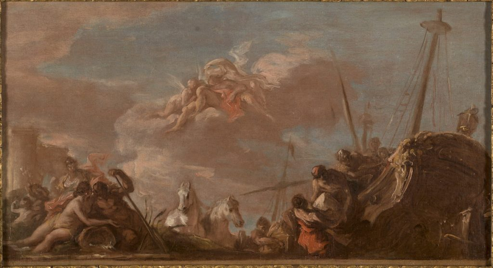
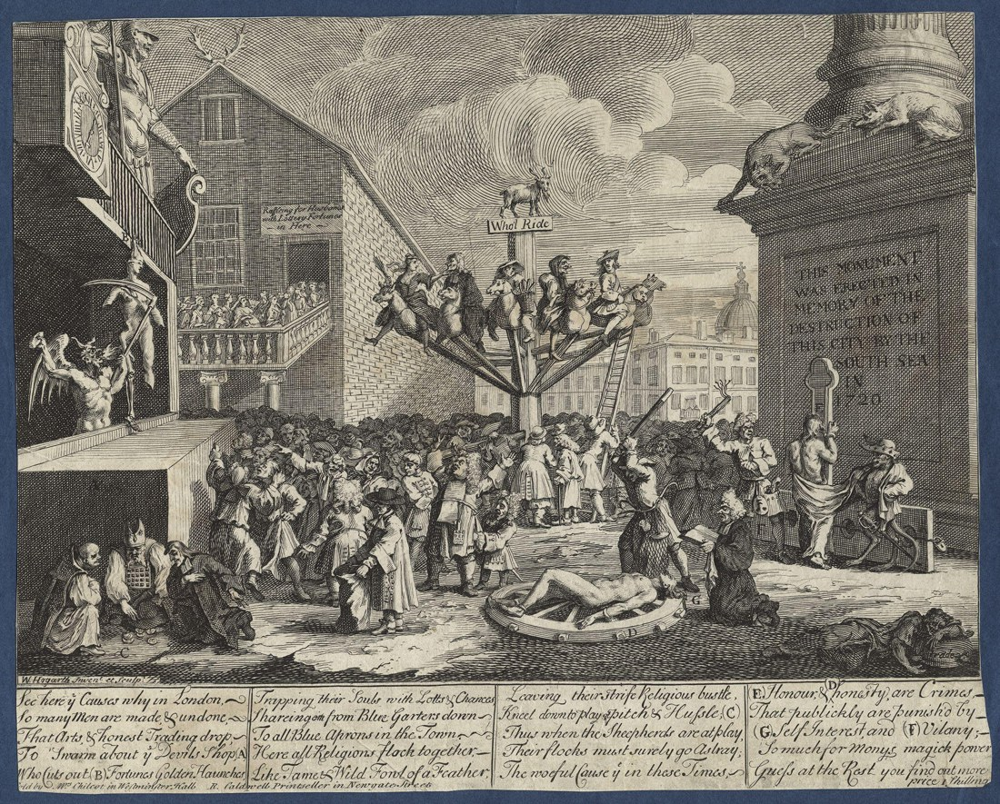
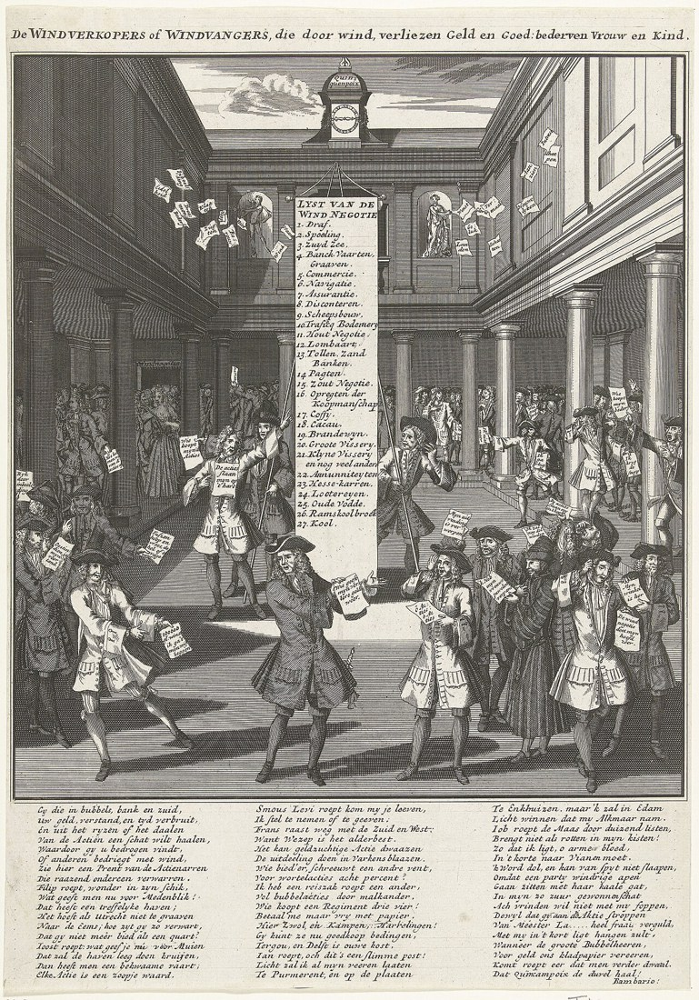
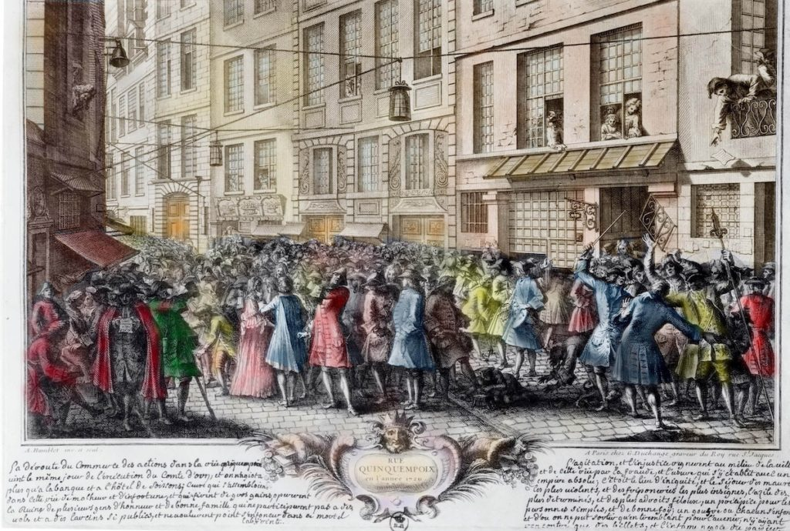
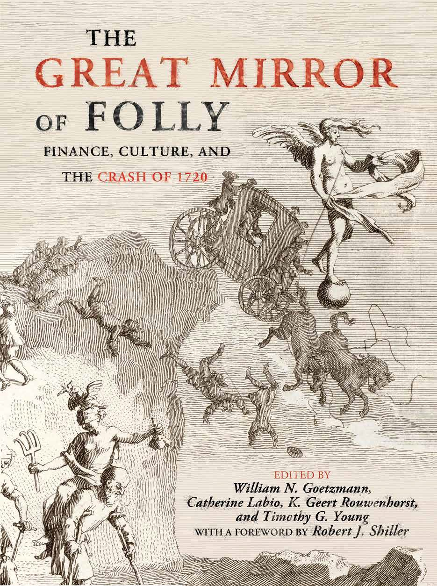

London, Paris and the Netherlands, 1720 — the world’s first international stock-market bubble, when the shares of the South Sea Company, John Law’s Mississippi Company, and a swarm of new Dutch insurance ventures rose and collapsed together within a single year.
In 1720 three financial manias unfolded almost simultaneously. In Paris, John Law’s Mississippi Company (the Compagnie des Indes) drove a speculative frenzy in the rue Quincampoix. In London, the South Sea Company’s scheme to convert the national debt sent its shares — and those of a crowd of imitators — soaring and then crashing, prompting the Bubble Act. In the Dutch Republic, dozens of new windhandel ("wind trade") insurance and shipping companies were floated in a matter of weeks.
With Rik Frehen and Geert Rouwenhorst, I assembled a new database of share prices from all three markets, day by day, through the boom and bust. It lets us watch the bubbles rise and fall in step — evidence that the events of 1720 were a single, connected episode, driven as much by new business fundamentals (Atlantic trade and insurance) as by folly.
The chart below plots the three markets together; the satirical prints and the Groote Tafereel der Dwaasheid record how contemporaries made sense of it; and the price data are free to download.

Each of the three markets left its own satirical record of 1720.



Yale’s Beinecke Rare Book & Manuscript Library holds a remarkable proto-Tafereel — a contemporary collection of the actual pamphlets, prospectuses, and satires as they were issued in 1720, bound together before the famous printed Groote Tafereel was compiled. It is a key source for our work: view it in the Beinecke digital collections →.

Rik G. P. Frehen, William N. Goetzmann & K. Geert Rouwenhorst, “New Evidence on the First Financial Bubble,” Review of Financial Studies / Journal of Financial Economics 108 (2013).